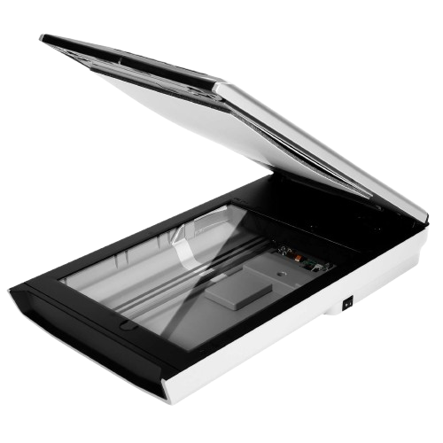

Motherboard
تعريف اللوحة الرئيسية في الحاسوب تُعرف اللوحة الرئيسية في جهاز الحاسوب (Mainboard) باسم اللوحة الأم (Motherboard)، أو اللوحة الأساسية (Base board) أو حتى لوحة الدارات الرئيسية (Main circuit board)،[١] وهي عبارة عن جزء مصنوع من مادة غير موصلة، وعادة ما تكون من البلاستيك المُقوى، ويوجد عليها العديد من المكونات الرئيسية والمهمة لجهاز الحاسوب، كما تحتوي على العديد من الدارات الكهربائية التي تصل بين المكونات المختلفة الموجودة عليها، فضلاً عن ذلك تحتوي اللوحة الأم على عدد من المنافذ والفتحات لتوصيل بعض أجزاء الحاسوب عليها كيف يتم تحديد سرعة المعالج وسرعة الناقل الأمامي؟ من خلال تردد الناقل الأمامي، تقوم شريحة الجسر الشمالي بتحديد سرعة المعالج وسرعة ناقل كرت الشاشة، هنا نرى أهمية هذه الشريحة التي تساهم في تحديد نوع المعالج الذي يمكن استخدامه على هذا المذربورد، سرعة المعالج تتحدد بما يسمى «معامل الضرب» وتردد الناقل، وتكون سرعة المعالج عبارة عن ناتج ضرب سرعة الناقل الأمامي بمعامل محدد، مثال على ذلك فان معالج بنتيوم 4 بسرعة 3200 MHZ هو عبارة عن سرعة الناقل الأمامي والتي تعادل 200 MHz مضروبة في معامل الضرب 16. عملية الضرب هذه تقوم بها شريحة الجسر الشمالي والمعالج بنفس الوقت، لذا، إذا كانت الشريحة لا تدعم معامل ضرب 16 أو أنها لا تدعم سرعة ناقل أمامي 200 MHZ فانك لن تستطيع تشغيل معالج 3200 MHZ على هذه اللوحة. كرت الشاشة AGP يعمل على سرعة ناقل 66MHZ، لتقليل سرعة الناقل الأمامي من سرعات 100MHZ و 133MHZ إلى هذه السرعة، فان شريحة الجسر الشمالي تقوم بعملية قسمة Divider تعادل ⅓ لسرعات 100MHZ ومعامل ½ لسرعات 133MHZ، ومعامل ⅓ لسرعات 200MHZ مثالنا لمعالج بنتيوم4 3200MHZ يمر بعملية قسمة تعادل (200 MHz * ⅓) مع جبر الكسر.
Input Devices
وحدات الإدخال ترتبط وحدات الادخال والاخراج ولولا وحدات الادخال لكانت وحدات الاخراج لا معنى لها، إن الماوس ولوحة المفاتيح والماسح الضوئي والميكروفون وكاميرا الويب من أكثر وحدات الإدخال المعروفة، حيث يعتبر الماوس ولوحة المفاتيح من أهمها، وقد تم تصميم جميع البرامج، بما فيها نظام التشغيل (OS)، بحيث يتم التنقل بينها والتحكم فيها باستخدام هذه الأجهزة. فيما يلي بعض من وحدات الإدخال الأكثر شيوعًا. لوحة المفاتيح يتم إدخال البيانات والتعليمات عن طريق الكتابة على لوحة المفاتيح حيث تصل الرسالة المكتوبة على لوحة المفاتيح إلى وحدة التخزين الخاصة بالكمبيوتر، وتكون متصلةً بجهاز الكمبيوتر سلكيًا أو لا سلكيًا. الفأرة وهو جهازٌ تأشيرٌ، فعند تحريك الفأرة يتحرك المؤشر الخاص بها على الشاشة، حيث يمكننا النقر، أو النقر المزدوج أو سحبها. وتحتوي على كرةٍ أسفلها، والتي تدور عند تحريك الفأرة فيقوم المستشعر الخاص بها بإعلام سرعة تحركاته للكمبيوتر، والتي بدورها تحرك المؤشر على الشاشة. الماسح الضوئي تستخدم الماسحات الضوئية لإدخال المعلومات مباشرةً إلى ذاكرة الكمبيوتر، حيث يقوم الماسح الضوئي بتحويل أي نوعٍ من المعلومات المطبوعة أو المكتوبة بما في ذلك الصور الفوتوغرافية إلى نبضاتٍ رقميةٍ يمكن معالجتها بواسطة الكمبيوتر. القلم الضوئي هو جهاز إدخالٍ يُستخدم لرسم خطوطٍ أو أرقامٍ على شاشة الكمبيوتر. Rader Character Optical أو قارئ الرموز البصرية هو جهازٌ يكتشف الأحرف الهجائية الرقمية المطبوعة أو المكتوبة على الورق، حيث يضيء النص المراد مسحه بمصدر ضوءٍ منخفض التردد، يتم استلام الضوء المنعكس بواسطة خلاية ضوئية. قارئ الرمز الشريطي أو ما يسمى بالباركود يقرأ هذا الجهاز الرموز الشريطية ويحولها إلى نبضاتٍ كهربائيةٍ لتتم معالجتها بواسطة جهاز كمبيوتر. أنظمة إدخال الصوت تقوم هذه الأجهزة بتحويل الكلمات المنطوقة إلى نموذج لغة M/C. حيث يتم تحويل الكلام البشري إلى إشاراتٍ كهربائيةٍ. الكاميرات الرقمية تقوم بتحويل الرسومات مباشرةً إلى شكلٍ رقميٍ، حيث تبدو وكأنها صورةٌ من كاميرا عادية ، أي أنها تقوم بتحويل الموجات الضوئية إلى موجاتٍ كهربائيةٍ.
KeyBoard
Microphone
Scanner
DigitalCamera
Disk drives
Mouse
Output
وحدات الإخراج المكون الثاني في وحدات الادخال والاخراج هي وحدات الاخراج، ووحدات الإخراج للكمبيوتر هي كافة الأجهزة الطرفية المتصلة بالكمبيوتر باستخدام كبلاتٍ أو شبكات اتصالٍ لاسلكيةٍ. حيث تقوم وحدات الإخراج بنقل البيانات التي تمت معالجتها بواسطة الكمبيوتر للمستخدم بمختلف الأشكال الصوتية والمرئية والنسخ المطبوعة. وتعد الشاشات والطابعات من أكثر أجهزة الإخراج المستخدمة مع الكمبيوتر شيوعًا، وفيما يلي أمثلة على أكثر وحدات الإخراج شيوعًا. الشاشة تقوم بإنشاء عرضٍ مرئيٍّ للمستخدمين لعرض البيانات التي تمت معالجتها من بيانات إلى صورٍ مرئيةٍ، وتصنع بمختلف الأحجام والأنواع، مثل شاشات أنبوب أشعة الكاثود، ويستخدم هذا النوع النقاط الفسفورية لإنشاء البكسلات التي تشكل صورًا معروضةً، والشاشات المسطحة التي تستخدم البلورات السائلة أو البلازما، حيث يتم تمرير الضوء من خلال البلورات السائلة لتوليد البكسل. تعتمد كافة أجهزة العرض على بطاقة فيديو موضوعة على اللوحة الأم للكمبيوتر أو في فتحةٍ خاصةٍ. الطابعة تقوم بإنشاء نسخ مطبوعة من البيانات التي تمت معالجتها مثل المستندات والصور الفوتوغرافية، حيث يقوم الكمبيوتر بنقل بيانات الصورة إلى الطابعة، والتي تقوم بإعادة الصورة بشكلٍ ماديٍّ وملموسٍ، عادةً على الورق. مكبرات الصوت تقوم بتحويل البيانات الرقمية من الكمبيوتر إلى أصوات. سماعة الرأس هي مزيجٌ من مكبرات الصوت والميكروفون. جهاز الإسقاط هو جهازٌ يعرض الصور أو الفيديو الذي تم إنشاؤه بواسطة الكمبيوتر, ثم يقوم الكمبيوتر بنقل البيانات إلى بطاقة الفيديو الخاصة به ، والتي تقوم بعد ذلك بإرسال صورة الفيديو إلى جهاز الإسقاط، ويستخدم عادة للعروض التقديمية أو لعرض مقاطع الفيديو. الراسم يولد نسخة ورقية من التصميم الرقمي، حيث يتم إرسال التصميم إلى الراسم من خلال بطاقة الرسومات ويشكل التصميم باستخدام قلمٍ خاصٍ ويستخدم بشكلٍ عامٍ في التطبيقات الهندسية. ويرسم الصورة بشكلٍ أساسيٍّ باستخدام سلسلةٍ من الخطوط المستقيمة.
Monitar
Speakers
Printer
PLOTTERS
Camera
الفرق بين الكاميرا الرقمية والكاميرا الفيلمية لا فرق جوهري سوى في طريقة استقبال، والاحتفاظ بالصورة الملتقطة. ففي الفيلم، تنطبع الصورة المتكوّنة من ومضة الضوء المارة بالعدسة على شريط مطليّ بمواد كيميائية أهمها نترات الفضة الحسّاسة للضوء، يتم تظهيرها بعد ذلك بنقعها في مواد كيميائية ثم طباعتها على ورق التصوير. لم تكن عملية كهذه تحتاج لطاقة كهربائية في آلة التصوير، إذن أن العملية عبارة عن تفاعل كيميائي، وكان يتم تدوير الفيلم لاستقبال اللقطة التالية بواسطة ذراع ميكانيكي. أما آلة التصوير الرقمية، التي لا تعمل دون طاقة كهربائية، فستقبل الصورة من خلال مكشاف ضوئي، حيث تستقبل ملايين العنصورات فوتونات الضوء، ثم تعالجها إلكترونيًا، تمهيدًا لتخزينها في ذاكرة داخل الكاميرا على شكل صور رقمية مؤلفة من وحدة تسمى البيكسل. أتاح وجود معالج إلكتروني داخل الكاميرا إمكانية القيام بالكثير من العمليات على الصورة الملتقطة كالتدوير والحذف، كما مكّن من تسجيل مقاطع الفيديو القصيرة والصوت. يمكنك أيضًا تطبيق بعض المؤثرات قبل التصوير، كالتصوير بالأبيض والأسود. مزايا الكاميرا الرقمية السُّرعة: ولعل هذا هو أهم عامل، إذ أن نجاح معظم الأعمال في العصر الحاضر قائم على السرعة، فمع التصوير الرقمي، يمكنك التقاط الصورة وتخزينها على حاسوبك في أقل من دقيقة، ويمكنك طباعتها بنفس جودة ورق الطباعة التقليدي في أقل من خمس دقائق، كما يمكنك نشرها على الإنترنت، أو إرسالها بالبريد الإلكتروني في دقائق معدودة. قلّة التكلفة: وربما قد يستغرب البعض، إذ أن كلفة شراء آلة تصوير رقمية قد يساوي ضعفيّ أو ثلاثة أضعاف سعر الآلة الفيلمية (التقليدية). إلا أن العكس هو الصحيح، فمع الآلة الفيلمية، تبدأ التكاليف وتستمر. من شراء مستمرّ للأفلام، وتكاليف لتظهير (تحميض) كل فيلم، مع ازدياد الوضع سوءً عند فساد بعض الصور؛ إما لأخطاء أو مشاكل أثناء التصوير أو في الفيلم أو أثناء عملية التظهير. أما الآلة الرقمية، فيمكنك فيها مسح الصور بضغطة زر، ويمكنك استخدام الذاكرة (ذاكرة تخزين الصور) آلاف المرّات دون مشاكل، علماً بأن أسعار هذه الذاكرات منخفضة ويمكنها تخزين مئات الصور عالية الجودة، وليس لعدد محدود كما في الفيلم. وعندما لا تعجبك أي صورة أو حتى مجموعة من الصور فضغطة زر واحدة تعيد الذاكرة خالية. تمكنك شاشة الكرستال السائل من مشاهدة الصور قبل وأثناء وبعد التقاطها وكذلك التحكم بوظائف الكاميرا تعدّد الخيارات: سواء قبل التقاط الصورة أو بعده، فقبل الالتقاط يمكنك رؤية الصورة النهائية، بحيث يمكنك تعديل التعريض مثلاً أو تطبيق تأثيرات كالتصوير بالأبيض والأسود. وبعد الالتقاط يمكنك معاينة الصورة، وتطبيق بعض المؤثرات عليها، كالتدوير والعكس، أو حتى حذفها. أما عند نقلها إلى الحاسوب، فهناك تبدأ الخيارات ولا تنتهي. التطور المستمر في تصنيع الآلات الرقمية: ويشمل هذا التطوير تقنيات حسّاسات الضوء، وكذلك تقنيات منع اهتزاز الصورة، نتيجة لاهتزاز آلة التصوير، وكذلك العديد من التقنيات الأخرى، ويترافق كل ذلك مع تدني في أسعار آلات التصوير الرقمية. سهولة الاستخدام: وهذه من الأمور المهمة للمبتدئين والمستخدمين العاديين، حيث تقوم معظم آلات التصوير الرقمية بضبط كل الإعدادات اللازمة لالتقاط صورة جيّدة. أما في الآلات المتوسطة والعالية المستوى، فتمتلك خيارات متعدّدة، كما تضم أنماط تصوير جاهزة يمكن الاختيار من بينها بحسب بيئة التصوير. الحفاظ على البيئة: لأنها لا تحتاج إلى مواد كيميائية مضرّة بالبيئة، كما هو موجود في التصوير التقليدي. بالإضافة إلى العديد من المزايا الأخرى التي تجعل من التصوير الرقمي خيارًا استراتيجيًا.
camera
project